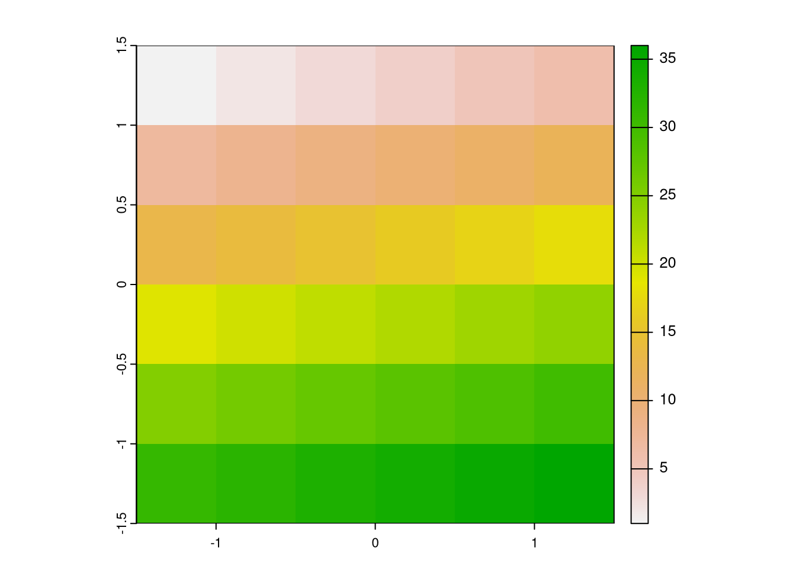
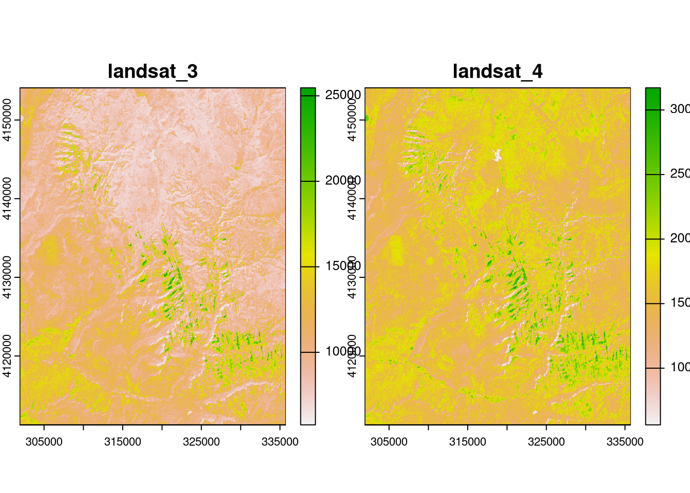

#vignette(package = "sf") # see which vignettes are available
#vignette("sf1") # an introduction to the packageDatos espaciales en R
Datos espaciales en R
Para esta fugaz intro a los datos espaciales en R, vamos a usar el libro “Geocomputation with R” que puede consultarse online aquí: https://r.geocompx.org/. Vamos a ir siguiendo algunos ejemplos del libro y quien desee conocer más detalles, puede consultarlos directamente allí o en los materiales que los autores mencionan.
En esta clase vamos a ver los conceptos básicos sobre los tipos fundamentales de datos geográficos: vector y raster. Veremos cómo están implementados en R, y ejemplificaremos algunas de las tareas más comunes que podemos realizar con cada uno de ellos.
El modelo de datos vectoriales representa el mundo mediante puntos, líneas y polígonos. Éstos tienen bordes discretos y bien definidos, lo que significa que los conjuntos de datos vectoriales suelen ser muy precisos (aunque no necesariamente exactos). El modelo de datos ráster divide la superficie en celdas de tamaño constante, generalmente. Los datos ráster agregan características a una resolución determinada, lo que significa que son coherentes en el espacio y escalables.
Note
¿Cuál utilizar? La respuesta depende probablemente de su ámbito de aplicación:
- Los datos vectoriales tienden a dominar las ciencias sociales porque los asentamientos humanos tienden a tener fronteras discretas
- Los datos rasterizados predominan en muchas ciencias medioambientales por su dependencia de los datos de teledetección.
Datos vectoriales
El modelo de datos vectoriales geográficos se basa en puntos situados dentro de un sistema de referencia de coordenadas (CRS). Los puntos pueden representar características autónomas (por ejemplo, la ubicación de una parada de autobús) o pueden unirse para formar geometrías más complejas, como líneas y polígonos.
Introducción a sf
El paquete sf nos permite trabajar con datos vectoriales en R. Simple Features es un estándar abierto desarrollado y aprobado por el Open Geospatial Consortium (OGC). Simple Features es un modelo de datos jerárquico que representa una amplia gama de tipos de geometría. sf puede representar todos los tipos de geometría vectorial habituales (sf no admite clases de datos ráster): puntos, líneas, polígonos y sus respectivas versiones “multi” (que agrupan características del mismo tipo en una única característica). sf también admite colecciones de geometría, que pueden contener múltiples tipos de geometría en un único objeto. Simple features es un modelo de datos ampliamente soportado que subyace en las estructuras de datos de muchas aplicaciones SIG, incluyendo QGIS y PostGIS.
La funcionalidad de sf está bien documentada en su sitio web https://r-spatial.github.io/sf/, que contiene 7 viñetas. Estas se pueden ver de la siguiente manera:

Los objetos feature simples en R se almacenan en un data.frame (tabla de datos), con los datos geográficos ocupando una columna especial, normalmente llamada ‘geom’ o ‘geometry’. Utilizaremos el conjunto de datos world proporcionado por spData para mostrar qué son los objetos sf y cómo funcionan.
class(world)[1] "sf" "tbl_df" "tbl" "data.frame"names(world) [1] "iso_a2" "name_long" "continent" "region_un" "subregion" "type"
[7] "area_km2" "pop" "lifeExp" "gdpPercap" "geom" head(world)| iso_a2 | name_long | continent | region_un | subregion | type | area_km2 | pop | lifeExp | gdpPercap | geom |
|---|---|---|---|---|---|---|---|---|---|---|
| FJ | Fiji | Oceania | Oceania | Melanesia | Sovereign country | 19289.97 | 885806 | 69.96000 | 8222.254 | MULTIPOLYGON (((-180 -16.55… |
| TZ | Tanzania | Africa | Africa | Eastern Africa | Sovereign country | 932745.79 | 52234869 | 64.16300 | 2402.099 | MULTIPOLYGON (((33.90371 -0… |
| EH | Western Sahara | Africa | Africa | Northern Africa | Indeterminate | 96270.60 | NA | NA | NA | MULTIPOLYGON (((-8.66559 27… |
| CA | Canada | North America | Americas | Northern America | Sovereign country | 10036042.98 | 35535348 | 81.95305 | 43079.143 | MULTIPOLYGON (((-132.71 54…. |
| US | United States | North America | Americas | Northern America | Country | 9510743.74 | 318622525 | 78.84146 | 51921.985 | MULTIPOLYGON (((-171.7317 6… |
| KZ | Kazakhstan | Asia | Asia | Central Asia | Sovereign country | 2729810.51 | 17288285 | 71.62000 | 23587.338 | MULTIPOLYGON (((87.35997 49… |
El contenido de esta columna geom es la que confiere a los objetos sf sus poderes espaciales: world$geom es una “columna lista” de la clase sfc que contiene todas las coordenadas de los polígonos de los países. Los objetos sf pueden visualizarse rápidamente con la función plot()
plot(world)Warning: plotting the first 9 out of 10 attributes; use max.plot = 10 to plot
all
Podemos obtener info de los atributos (columnas) de los objetos sf, como se hace con cualquier data.frame:
summary(world["lifeExp"]) lifeExp geom
Min. :50.62 MULTIPOLYGON :177
1st Qu.:64.96 epsg:4326 : 0
Median :72.87 +proj=long...: 0
Mean :70.85
3rd Qu.:76.78
Max. :83.59
NA's :10 Los objetos sf son fáciles de subdividir. Por ejemplo, podemos recortar sólo las dos primeras filas y las tres primeras columnas del objeto world.
world_mini = world[1:2, 1:3]
plot(world_mini)
También podemos subdividir por columnas únicamente, ya sea con su índice o el nombre
plot(world[3:6])
plot(world["pop"])
Podemos hacer selecciones
world_asia = world[world$continent == "Asia", ]
asia = st_union(world_asia)y añadir capas a las imágenes existentes estableciendo add = TRUE
plot(world["pop"], reset = FALSE)
plot(asia, col = "red", add = TRUE)
Hay varias formas de modificar los mapas con el método plot() de sf. Por ejemplo, se pueden superponer círculos, cuyos diámetros (fijados con cex =) representan poblaciones de países, en un mapa del mundo.
plot(world["continent"], reset = FALSE)
cex = sqrt(world$pop) / 10000
world_cents = st_centroid(world, of_largest = TRUE)Warning: st_centroid assumes attributes are constant over geometriesplot(st_geometry(world_cents), add = TRUE, cex = cex)
Tipos de geometías
Las geometrías son los componentes básicos de los objetos sf y pueden adoptar uno de los 18 tipos de geometría que admite el paquete sf. Los siete tipos más utilizados son: PUNTO, LINESTRING, POLYGON, MULTIPOINT, MULTILINESTRING, MULTIPOLYGON y GEOMETRYCOLLECTION.
Por lo general, el usuario se ahorra la tediosa tarea de crear geometrías por su cuenta, ya que puede simplemente importar un archivo espacial ya existente. Sin embargo, existe un conjunto de funciones para crear objetos geométricos de características simples (sfg) desde cero si es necesario. Los nombres de estas funciones son sencillos, todas comienzan con el prefijo st_ y terminan con el nombre del tipo de geometría:
- Un punto:
st_point() - Una cadena de líneas:
st_linestring() - Un polígono:
st_polygon() - Un multipunto:
st_multipoint() - Una multilínea:
st_multilínea() - Un multipolígono:
st_multipolygon() - Una colección de geometrías:
st_geometrycollection()
Los objetos sfg pueden crearse a partir de tres tipos de datos R básicos:
- Un vector numérico: un único punto
- Una matriz: un conjunto de puntos, donde cada fila representa un punto, un multipunto o una cadena de líneas
- Una lista: una colección de objetos como matrices, multilíneas o colecciones de geometría.
Datos raster
El modelo de datos espaciales ráster representa el mundo con la cuadrícula continua de celdas (a menudo también llamadas píxeles). Este modelo de datos se refiere a menudo a las denominadas cuadrículas regulares, en las que cada celda tiene el mismo tamaño constante.
El modelo de datos ráster suele constar de una cabecera ráster y una matriz (con filas y columnas) que representa celdas equidistantes (a menudo también denominadas píxeles). La cabecera ráster define el sistema de referencia de coordenadas, la extensión y el origen. El origen (o punto de partida) suele ser la coordenada de la esquina inferior izquierda de la matriz (el paquete terra, sin embargo, utiliza por defecto la esquina superior izquierda). La cabecera define la extensión mediante el número de columnas, el número de filas y la resolución del tamaño de las celdas. De este modo, partiendo del origen, podemos acceder fácilmente a cada celda y modificarla, ya sea utilizando el ID de una celda o especificando explícitamente las filas y columnas. Esta representación matricial evita almacenar explícitamente las coordenadas de los cuatro puntos de esquina (de hecho, sólo almacena una coordenada, el origen) de cada esquina de celda, como ocurriría en el caso de los polígonos vectoriales rectangulares. Sin embargo, a diferencia de los datos vectoriales, la celda de una capa raster sólo puede contener un único valor. El valor puede ser numérico o categórico.

Los mapas raster suelen representar fenómenos continuos como la elevación, la temperatura, la densidad de población o datos espectrales. En el modelo de datos raster también pueden representarse características discretas, como clases de suelo o de cubierta terrestre.

Paquetes de R para trabajar con datos ráster
En las dos últimas décadas, se han desarrollado varios paquetes para leer y procesar conjuntos de datos raster. El principal de ellos fue raster, que supuso un cambio radical en las capacidades raster de R cuando se lanzó en 2010 y se convirtió en el principal paquete en este ámbito hasta el desarrollo de terra y stars. Estos últimos, desarrollados más recientemente, ofrecen funciones potentes y eficaces para trabajar con conjuntos de datos ráster, y existe un solapamiento sustancial entre sus posibles casos de uso. Aquí nos vamos a centrar en el paquete terra.
Introducción a terra
El paquete terra soporta objetos raster en R. Al igual que su predecesor raster (creado por el mismo desarrollador, Robert Hijmans), proporciona un amplio conjunto de funciones para crear, leer, exportar, manipular y procesar conjuntos de datos raster. La funcionalidad de terra es en gran medida la misma que la del paquete raster, pero hay algunas diferencias: las funciones de terra suelen ser más eficientes computacionalmente. Puede traducir sin problemas entre los dos tipos de objetos para garantizar la compatibilidad con scripts y paquetes más antiguos, por ejemplo, con las funciones raster(), stack() y brick() en el paquete raster.
Además de las funciones para la manipulación de datos ráster, terra proporciona muchas funciones de bajo nivel que pueden constituir una base para el desarrollo de nuevas herramientas para trabajar con conjuntos de datos ráster. terra también le permite trabajar con grandes conjuntos de datos ráster que son demasiado grandes para caber en la memoria principal. En este caso, terra ofrece la posibilidad de dividir el raster en trozos más pequeños, y procesarlos iterativamente en lugar de cargar todo el archivo raster en la RAM.
raster_filepath = system.file("raster/srtm.tif", package = "spDataLarge")
my_rast = rast(raster_filepath)
class(my_rast)[1] "SpatRaster"
attr(,"package")
[1] "terra"my_rastclass : SpatRaster
dimensions : 457, 465, 1 (nrow, ncol, nlyr)
resolution : 0.0008333333, 0.0008333333 (x, y)
extent : -113.2396, -112.8521, 37.13208, 37.51292 (xmin, xmax, ymin, ymax)
coord. ref. : lon/lat WGS 84 (EPSG:4326)
source : srtm.tif
name : srtm
min value : 1024
max value : 2892 plot(my_rast)
Clases de datos raster
El paquete terra soporta numerosos controladores con la ayuda de la biblioteca GDAL. Por lo general, los rásters de los archivos no se leen completamente en la RAM, a excepción de su cabecera y un puntero al archivo.
single_raster_file = system.file("raster/srtm.tif", package = "spDataLarge")
single_rast = rast(raster_filepath)
single_rastclass : SpatRaster
dimensions : 457, 465, 1 (nrow, ncol, nlyr)
resolution : 0.0008333333, 0.0008333333 (x, y)
extent : -113.2396, -112.8521, 37.13208, 37.51292 (xmin, xmax, ymin, ymax)
coord. ref. : lon/lat WGS 84 (EPSG:4326)
source : srtm.tif
name : srtm
min value : 1024
max value : 2892 Los rásters también pueden crearse desde cero utilizando la misma función rast().
new_raster = rast(nrows = 6, ncols = 6,
xmin = -1.5, xmax = 1.5, ymin = -1.5, ymax = 1.5,
vals = 1:36)
plot(new_raster)
La clase SpatRaster también puede manejar múltiples capas, por ejemplo, las bandas de un satélite multiespectral o una serie temporal de rásters.
multi_raster_file = system.file("raster/landsat.tif", package = "spDataLarge")
multi_rast = rast(multi_raster_file)
multi_rastclass : SpatRaster
dimensions : 1428, 1128, 4 (nrow, ncol, nlyr)
resolution : 30, 30 (x, y)
extent : 301905, 335745, 4111245, 4154085 (xmin, xmax, ymin, ymax)
coord. ref. : WGS 84 / UTM zone 12N (EPSG:32612)
source : landsat.tif
names : landsat_1, landsat_2, landsat_3, landsat_4
min values : 7550, 6404, 5678, 5252
max values : 19071, 22051, 25780, 31961 nlyr(multi_rast)[1] 4Los rásters multicapa se pueden subdividir con el índice o el nombre de las capas deseadas:
multi_rast3 = subset(multi_rast, 3)
multi_rast4 = subset(multi_rast, "landsat_4")Se pueden combinar o concatenar con la función c():
multi_rast34 = c(multi_rast3, multi_rast4)
plot(multi_rast34)